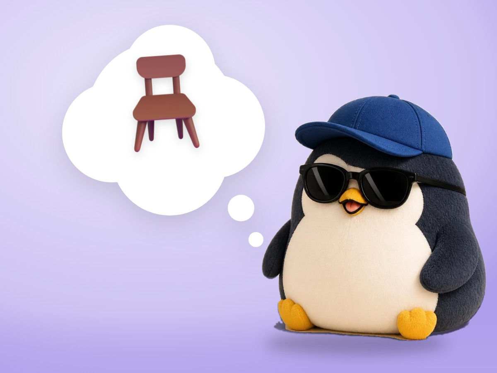

🧪 LAB · 試作 — AIが読書メモから一気に作った記事です。本番の一覧には出していません · 試作の一覧
🐧 EVERYDAY LIFE⚡ 19 SEC
A feeling you avoided is often just like a bad chair 🪑

Just Feel It
If you feel a feeling you were running away from, just for a little while, nothing terrible happens.
A Small Ugh
Most of the time, it ends as a small "ugh," like a bad chair or a rainy day without an umbrella.
⚡ TRY IT
Feel it for 5 seconds
Pick a feeling you have been running away from.
👾
5
Tap a feeling above.
It looks big and scary. But is it really?
Breathe… Do not run. Just feel it.
🪑 It was just a wobbly chair.
☔ It was just a rainy day without an umbrella.
🪑 Just a small "ugh." Nothing terrible happened.
🚨 This one is different. It is a gut warning. Trust it, and go to a bright street.
🎉 You felt all 3. Nothing terrible happened!
Gut Is Different
But a gut feeling like "This dark street is dangerous" is different.
Trust It
Please trust that kind of gut feeling.
📚 I learned this from Oliver Burkeman's newsletter. Read the original (English)